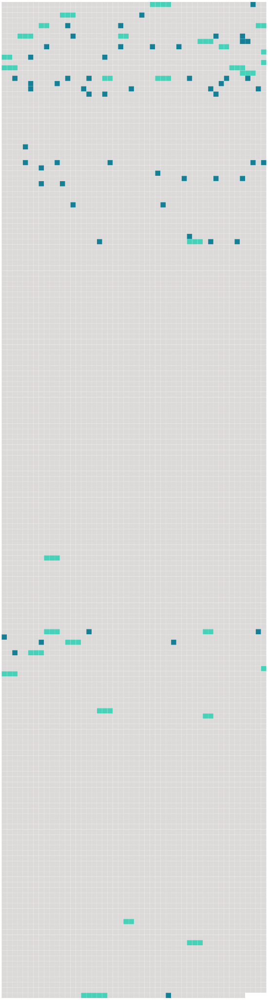

Longueur nb maillons : 84 mentions |
|
Mais dans tous les cas, les pauvres naufragés se confiaient en la Providence, qui ne pouvait pas les abandonner, et leur viendrait certainement en aide [.Deux jeunes gens] , Roger de Ville et Paul Lamontagne, offrirent d'aller à la découverte.
[Ils] voulaient atteindre le sommet d'une montagne, haute de sept ou huit cents pieds, qui se dressait majestueuse, à peu de distance. [2 phrases] [Roger et Paul] partirent donc, vers les neuf heures, de l'avant-midi. [Ils] emportaient des provisions, deux couvertures de voyage, deux carabines, un câble solide et une lunette marine puissante. [2 phrases]
Les souhaits de bon voyage ne manquèrent pas [aux excursionnistes] , et on [les] suivit des yeux, aussi longtemps qu'on put [les] apercevoir. Ce n'est pas mon intention de vous donner de longs et minutieux détails de cette excursion et de toutes les difficultés que [les voyageurs] rencontrèrent en route ; essayez, si vous le pouvez, de vous faire une idée de ce que peut être une promenade de ce genre, dans un pays inconnu, coupé de ravins et rendu presque impraticable par mille difficultés naturelles.
Ce ne fut que vers le soir, que [Roger et Paul] atteignirent le haut de la montagne. [Ils] n'auraient pu choisir un meilleur observatoire et [tous deux] , à tour de rôle, promenèrent la lunette marine sur l'horizon.
Puis, [ils] se regardèrent, et [dirent] presque simultanément, avec une note de découragement dans la voix : [3 phrases] [Les deux amis] redescendirent dans la vallée et [continuèrent] [leur] route, cherchant un endroit favorable pour passer la nuit. [Ils] restaient silencieux, maintenant, n'osant se communiquer les sombres pensées qui [les] assaillaient. Quelle horrible nouvelle [ils] auraient à rapporter à [leurs] compagnons, le lendemain!! … Et [tous deux] songeaient : comment sortir d'ici?? [2 phrases] Bientôt, [Roger et Paul] s'arrêtèrent, [ils] avaient atteint le bord de la mer, et c'est là qu' [ils] voulaient passer la nuit. [1 phrases] Mais nul vestige de végétation ne s'y voyait, et par des signes, qui ne pouvaient tromper les yeux experts de Roger, [les deux jeunes gens] comprirent que cet endroit avait été récemment visité par un tremblement de terre. [1 phrases] L'Océan offrait, cependant une particularité, qui ne manqua pas d'intéresser [les deux amis] malgré les angoisses de l'heure présente ; l'eau était si limpide que le regard pouvait plonger à une grande profondeur : quand les vagues se retiraient, on voyait même le fond de la mer, on apercevait les poissons qui nageaient entre deux eaux.
Mais [les jeunes gens] étaient si fatigués qu' [ils] ne s'attardèrent pas à de vains commentaires, [ils] s'enveloppèrent de [leur] couverture et [s'endormirent] profondément. [1 phrases]
Une Grande Découverte [Ils] avaient la conviction que les naufragés du « Queen of the Waves » étaient voués à une mort certaine, sur ce rocher désert. [1 phrases]
la vie ne [les] avait pas traités en enfants gâtés, jusqu'à ce jour, mais [ils] l'aimaient quand même, cette marâtre, et [ils] se promirent, avec toute l'énergie de [leur] vingt ans, de trouver un moyen de s'arracher au sort horrible qui [les] guettait. Avant de retourner au campement, [ils] voulurent explorer davantage les bords de la mer. Et, malgré les pensées tragiques qui assombrissaient [leur] esprit, [ils] subissaient le charme attirant de cette nature grandiose et terrible. Cette limpidité de l'eau était si extraordinaire qu' [ils] croyaient être le jouet d'une illusion. [20 phrases] » reprit Paul aussi excité que son ami, maintenant ; ce bateau sous-marin, dont les aventures extraordinaires ont tant amusé et intrigué [notre] imagination d'enfant. [3 phrases] Et, puis à quoi peut [nous] servir cette découverte?? Si [nous] sommes destinés à périr sur ce rocher désert, [nous] ne pourrons même pas la faire connaître au monde.
» [1 phrases]
»
»
» [4 phrases]
» Il ne serait pas si difficile de construire d'autres sous-marins, que [nous] pourrions relier entre eux par des couloirs-tubes, détachables à loisir ; quand l'un des sous-marins voudrait remonter à la surface, il n'aurait qu'à se détacher des autres ; si la ville entière avait quelquefois, la fantaisie d'aller faire une expédition chez les terriens, on n'aurait encore qu'à détacher les tubes, et chaque habitant de la ville voyagerait ainsi avec toute sa maison. [8 phrases]
»
» [Leur] retour fut salué avec des démonstrations de joie par les autres naufragés, qui écoutèrent avec beaucoup d'intérêt le récit de la découverte merveilleuse. [134 phrases] De son côté, l'abbé se sentit immédiatement conquis par la gaîté de bon aloi [des jeunes gens] [33 phrases] Un jour que [Roger et Paul] étaient allés à terre, [ils] virent un homme assis sur un rocher, et qui examinait le « Nautilus » avec attention. Au moment où [les voyageurs] allaient se rembarquer, cet homme vint à [eux] et [leur] dit : « Est -il vrai qu'il existe une ville sous-marine où l'on peut vivre en paix, loin de toutes les conventions du monde, loin de toutes les niaiseries et de toutes les faussetés qui fleurissent sur la terre??
»
»
» [9 phrases]
Il était au centre de la ville et il semblait aussi grand que le « Nautilus », mais comme [ni Roger ni Paul] n'avait proposé de le visiter, le prêtre n'osa pas le demander. [16 phrases]
[Roger et Paul] furent donc assez surpris, au retour de cette pêche miraculeuse, de voir le chien se dresser sur le bord de l'embarcation et pousser un hurlement prolongé. [2 phrases]
» [73 phrases]
L'abbé Bernard était le témoin de la tristesse de [ses amis] , mais il se taisait, n'osant provoquer des confidences qui ne s'offraient pas. [8 phrases]
Vers dix heures, Roger dit à l'abbé : [22 phrases] [Le gouverneur et son secrétaire] ayant pris place aux bancs armoriés qu'on avait préparés pour [eux] , une main habile joua les premiers accords d'un chant de Noël. |
 |
Il est possible de télécharger la ressource sur la page Ortolang |
Si vous avez des questions ou vous voyez des erreurs, merci d'envoyer un mail à silvia.federzoni89@gmail.com |